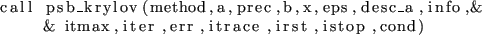

call prec%descr()
call prec%descr(iout, root)
- Type:
- Asynchronous.
- On Entry
-
- prec
- the preconditioner.
Scope: local
Type: required
Intent: in.
Specified as: a preconditioner data structure precdatapsb_prec_type.
- iout
- output unit.
Scope: local
Type: optional
Intent: in.
Specified as: an integer number. Default: default output unit.
- root
- Process from which to print
Scope: local
Type: optional
Intent: in.
Specified as: an integer number between 0 and , in which case
the specified process will print the description, or  , in which case
all processes will print. Default: 0.
, in which case
all processes will print. Default: 0.